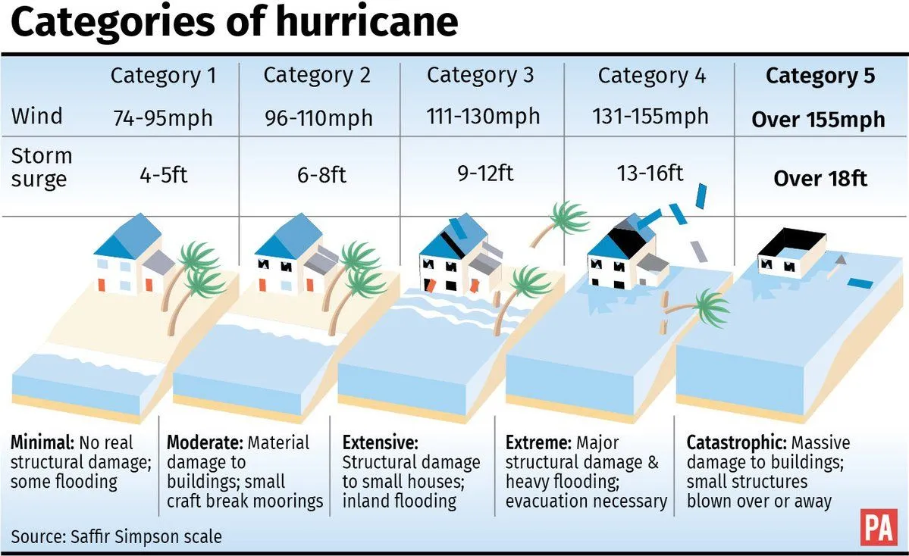

Back to bell schedule
Hurricane Milton News
CAT 5 Hurricane Status with winds of 160MPH!

Wind Speeds at 160mph per 11:55am EDT special advisory - Source: NHC Special Advisory
Last Public Advisory Summary
SUMMARY OF 1055 AM CDT...1555 UTC...INFORMATION
-----------------------------------------------
LOCATION...21.7N 91.6W
ABOUT 125 MI...200 KM WNW OF PROGRESO MEXICO
ABOUT 715 MI...1150 KM SW OF TAMPA FLORIDA
MAXIMUM SUSTAINED WINDS...160 MPH...250 KM/H
PRESENT MOVEMENT...ESE OR 110 DEGREES AT 9 MPH...15 KM/H
MINIMUM CENTRAL PRESSURE...925 MB...27.31 INCHES